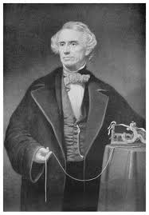

Samuel Morse est peintre et inventeur né le 27 avril 1791. A la moitié de sa vie, il prend part à l'invention du télégraphe électrique à enregistrement basé sur le système du télegraphe européens.Après cinq ans de travail, il le présente pour la toute première fois en 1837. Un an plus tard, en 1828, il développe le code Morse.
Samuel Morse ne crée pas tout seul le télegraphe électrique mais il collaborera avec William Fothergill Cook et Charles Wheatstone.Après des années de travil, ils présentent cette invention pour la première fois en 1827. Au début de sa création, le télegraphe électrique utilise une méthode de l'Antiquité, c'est à dire, il permet d'envoyer des signuax dans des endroits écarté. Par la suite Samuel Morse et Alferd Vail vont développé le code Morse pour le télegraphe électrique inventée un an plus tôt.Ce codage désigne à chaque lettre, chiffre et ponctuation un signal unique et propre à chacun. Ce language va être surtout utilisé par les militaires pour communiquer. Dans le domaine maritime le code Morse permet la signalisation par certains émeteurs radar et des feux. De nombreux scouts et de radiomateurs pratique le morse avec le son ou avec de la lumière.